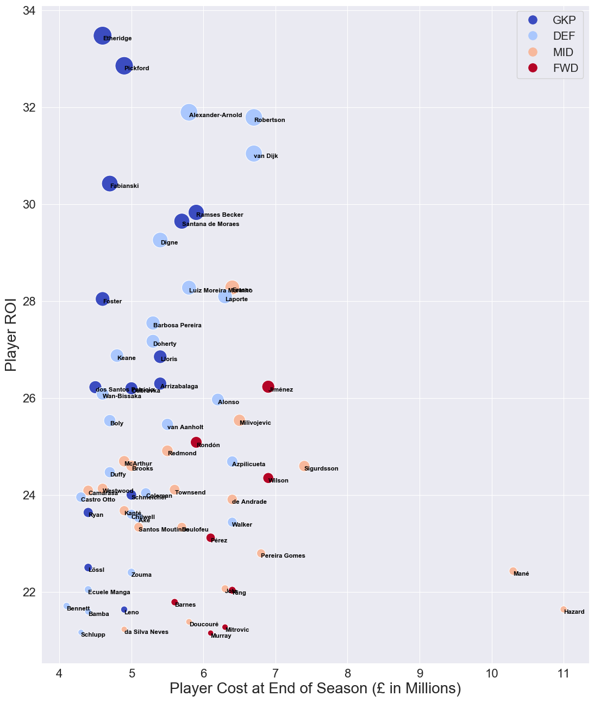

Recommendation System
THE BUSINESS PROBLEM
Whether competing with friends recreationally or placing bets professionally, the growth of
fantasy sports has led to the use of data analytics to predict team and player performance.
This can be challenging for complex team sports, especially in fast-paced competitive leagues.
Using simple metrics, how can we predict a top-performing fantasy soccer team in the English
Premier League (EPL)?
RESOURCES
This is a personal project inspired by my desire to improve my own fantasy soccer scores
when competing with friends. I made use of open-source software such as Python, Jupyter, and
Matplotlib. The fantasy football data was obtained via requests from the official
Fantasy Premier League API.
SOLUTION
As part of my solution I created a return on investment (ROI) measure for all players and
teams in the EPL. The ROI relates the total fantasy points earned by a player over the course of
the 38-week season to their purchase value and their number of minutes played.
From this analysis I was able to easily select
a mixture of high-ROI and high point-producing players within my budget constraints.

IMPACT
This project was initially performed during the 2018/2019 EPL season, but the solution I propose can be
easily implemented for future seasons. The Jupyter notebook I created also comes with visualizations
which categorize the most valuable players by their positions. This functionality allows for
more manager flexibility such that should a player become injured, a replacement player can
easily be found for that corresponding position.
The Jupyter notebook for this project can be found on my
GitHub.